- Módulo: Administración de Sistemas Operativos
- Título del trabajo Recursos compartidos Samba (SMB/CIFS).
- Componentes del grupo: Isabel Quintero Sánchez.
- Curso Académico: 2014/2015
- Fecha de entrega: 13 de Marzo de 2015
Lo primero que debemos hacer es configurar la máquina que utilizaremos. Configuramos la red, el nombre de equipo e instalamos "openssh-server".
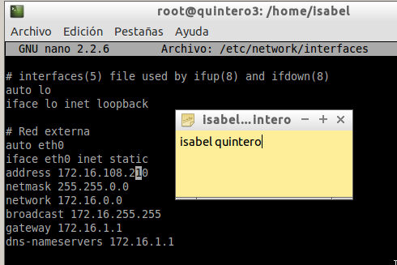 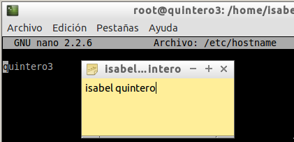 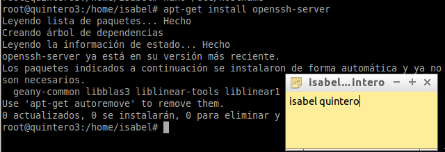En primer lugar, creamos los usuarios "info1,info2 y supersamba" y, el grupo "informaticos".
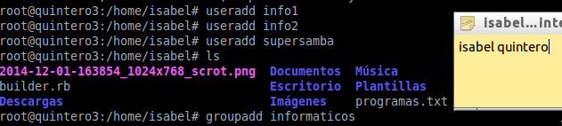Unimos los usuarios creados al grupos "informatico" también creado anteriormente.
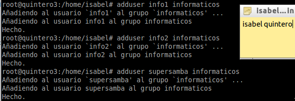Luego, creamos los usuarios "pan1 y pan2" y el grupo "panaderos".
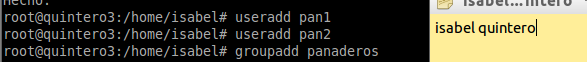Dichos usuarios los unimos al grupo "panadero" y, también el usuario "supersamba".
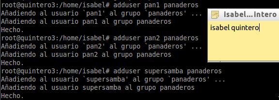A continuación, ceamos el usuario "smbguest", debemos asegurarnos que nadie puede usar smbguest para entrar en nuestra máquina mediante login, para ello vamos a modificar en el fichero "/etc/passwd" de la siguiente manera:
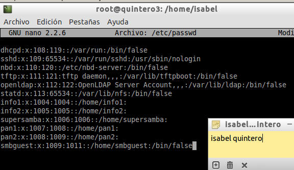Finalmente, creamos el grupo usuariosamba, y dentro de este ponemos a todos los panaderos, informaticos, supersamba y a smbguest.
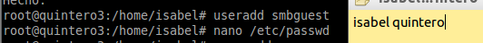 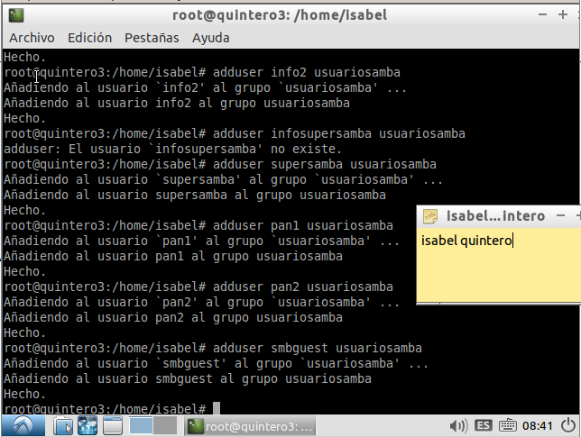Instalamos y configuramos el servidor Samba a través del comando "apt-get install".
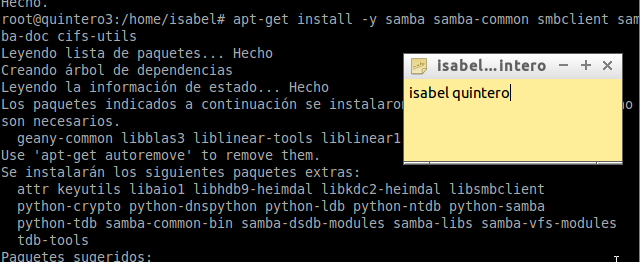Luego, configuramos el servidor samba, para ello, renombramos el fichero de configuración existente, y trabajaremos a partir de un fichero de configuración nuevo vacío, esto lo hacemos a través del comando "mv /etc/samba/smb.conf /etc/samba/smb.conf.000". Creamos un fichero vacío "/etc/samba/smb.conf", y lo rellenamos con el contenido siguiente:
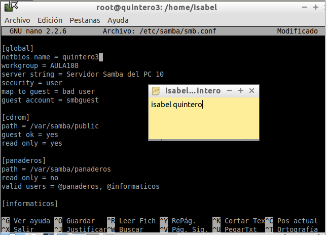Creamos las carpetas de los recursos compartidos con los permisos, y les ponemos los usuarios y grupos porpietarios.
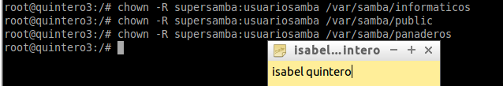 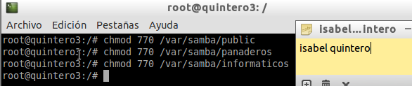Finalente, añadimos los usuarios a Samba y, comprobamos la lista de usuarios Samba.
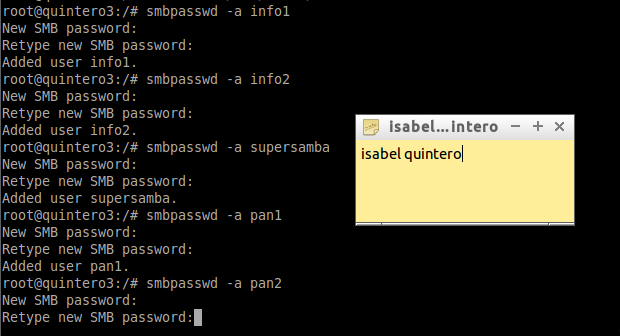 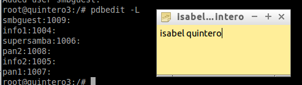Una vez terminada la configuración, reiniciamos el servicio.
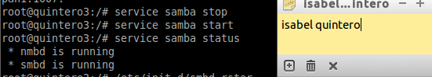Verifica la sintaxis del fichero de configuración del servidor Samba.
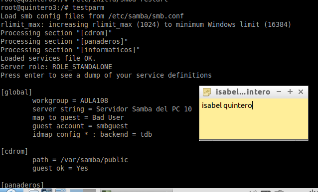Vemos que el servicio SMB/CIF está a la escucha.
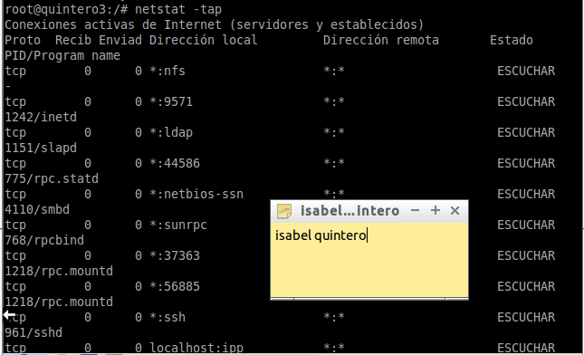Desde un cliente Windows 7 tenemos que tratar de acceder a los recursos compartidos del servidor Samba.
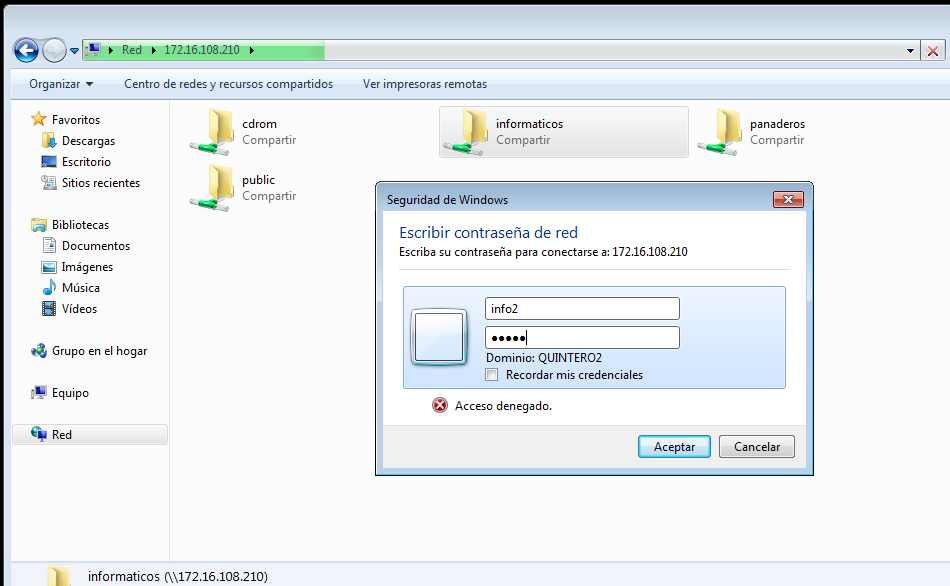Después de cada conexión se queda guardada la información en el cliente, lo comprobamos a través del comando "net use". Y, para comprobar los resultados desde el Servidor hacemos "smbstatus".
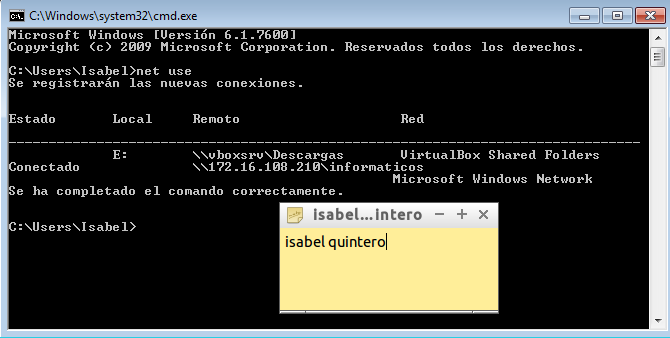 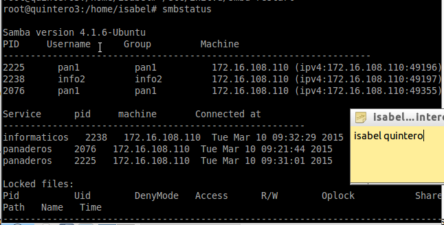Para cerrar las conexión SMB/CIFS que ha realizado el cliente al servidor, usamos el comando: "C:>net use * /d /y".
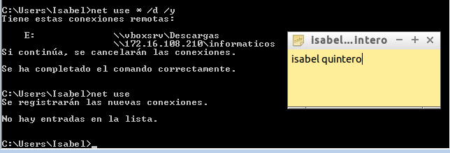Con el comando "net view", vemos las máquinas (con recursos CIFS) accesibles por la red.
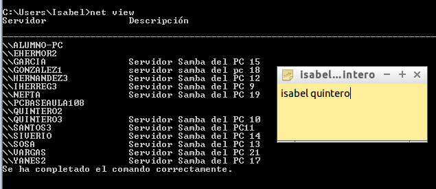Vamos a conectarnos desde la máquina Windows al servidor Samba usando los comandos net. Por ejemplo el comando "net use P: \\172.16.108.210\panaderos /USER:pan1" establece una conexión del rescurso panaderos en la unidad P.
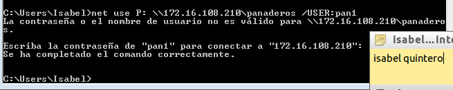Ahora podemos entrar en la unidad P ("p:") y crear carpetas, etc. Y comprobamos que en el servidor se ha creado la carpeta.
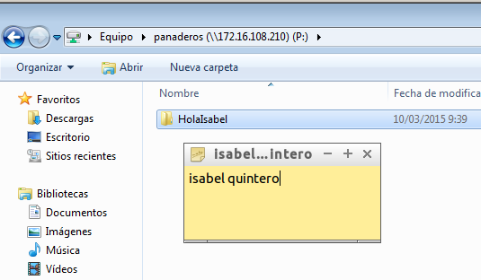 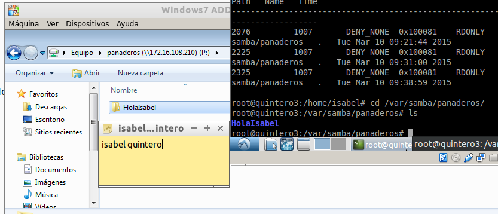Para empezar, creamos en local la carpeta "/mnt/samba-remoto/public" y "/mnt/samba-remoto/panaderos". Y, Con el usuario root, usamos el siguiente comando para montar un recurso compartido de Samba Server, como si fuera una carpeta más de nuestro sistema: "mount -t cifs //172.16.108.210/panaderos /mnt/samba-remoto/panaderos -o username=pan1".
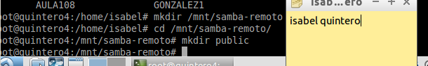 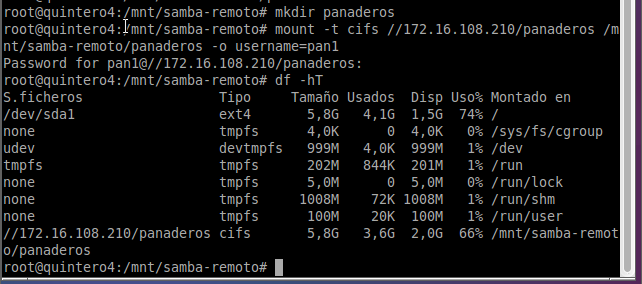Si montamos la carpeta de panaderos, lo que escribamos en "/mnt/samba-remoto/panaderos" debe aparecer en la máquina del servidor Samba, debemos comprobarlo.
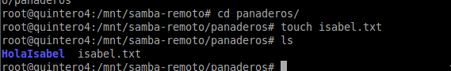 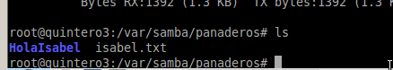lo que hemos hecho ha sido acceder de forma manual, esto conlleva a que cada vez que reiniciemos el equipo los montajes ya no estén establecidos. Lo que haremos será hacer los montajes de forma automática, para ello debemos añadir la siguiente línea al fichero "/etc/fstab".
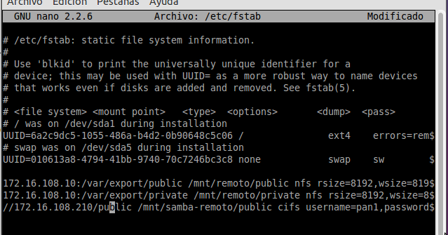Y, comprobamos que reiniciamos y no se desmonta lo que hemos montado anteriormente de forma automática.
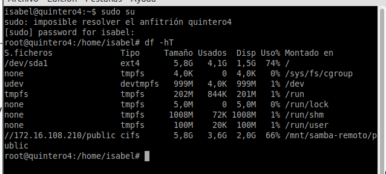